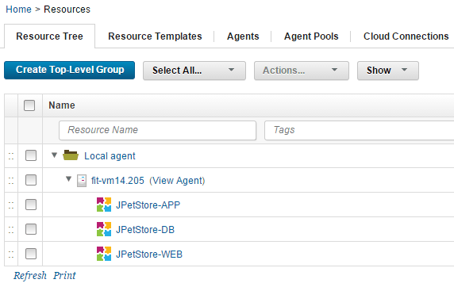

Inventories
You use different inventories to track installed components and properties in HCL® UrbanCode™ Deploy elements.
Inventories provide a complete view of the status and contents of your components. There are different views of the current inventory, depending on your location in HCL UrbanCode Deploy. Inventory information is available on individual components, for every application environment, for each agent resource, and for each component resource.
- The component inventory lists all the resources on which a component is deployed. To see the inventory for a component, click Components, click the component, and look on the Dashboard tab, under Inventory for Component.
- The environment inventory lists all the component versions that are deployed to an environment. To see the inventory for an environment, click Applications, click the application, and on the Environments tab, expand the environment.
-
The resource inventory lists all the components that are deployed to an agent resource. To see the inventory for an agent resource, click Resources, and expand the resource tree to see which components are installed on which agent resources, as shown in the following figure.

-
The resource configuration inventory lists all the properties that are associated with a component resource's elements. To view the configuration inventory for a component resource, click Resources, expand the resource tree, select a component, and, from within the component, click the Inventory tab. Locate the properties within the Configuration Inventory, and click View to display the Property Details dialog box.
When you create application processes, you have the option of allowing the server to manage the environment inventory and compliance automatically, or to manage the inventory yourself. See Managing environment inventory and compliance. HCL UrbanCode Deploy always tracks the component, resource, and resource configuration inventories automatically.
- Environment inventory and compliance
The inventory for an environment lists the component versions that are intended to be deployed to that environment. Compliance shows whether the environment contains those component versions. - Viewing resource configuration inventories
You can view the configuration inventory for a component, which includes all properties that are associated with the component resource.
Parent topic: Modeling software deployment